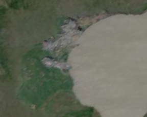
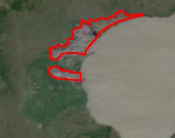
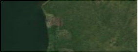
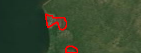

Mapping Retrogressive Thaw Slumps with AI
Welcome to the GeoAI Challenge, a competition at the intersection of Geoscience and Artificial Intelligence. We invite you to develop innovative AI models to map retrogressive thaw slumps, a critical indicator of climate change in the Arctic.
About the Challenge
Retrogressive thaw slumps (RTS) are landslides that occur in icy permafrost terrain. As the climate warms, these slumps are becoming more frequent and are dramatically reshaping the Arctic landscape. They have a significant impact on the environment, including the release of greenhouse gases.
Mapping RTS is a challenging task due to their dynamic nature, small scale, and often subtle appearance in satellite imagery. This competition challenges you to leverage deep learning and AI to automatically identify and map these important features. By participating, you will contribute to a better understanding of permafrost thaw and its consequences.
Dataset Samples
The dataset consists of high-resolution satellite imagery paired with corresponding segmentation masks that outline the retrogressive thaw slumps. Your goal is to train a model that can accurately generate these masks from the satellite images.
| Satelite Image (Input) | Ground Truth Mask (Target) |
|---|---|
|  |  |
|  |  |
Timeline
- Competition Launch: [Start Date]
- Registration Deadline: [Date]
- Final Submission Deadline: [Date]
- Winner Announcement: [Date]
Qualification, Rules, and Awards
Qualification
The competition is open to everyone, including students, academics, and industry professionals. We encourage participants from diverse backgrounds in computer science, remote sensing, geoscience, and related fields to form teams and compete.
Rules
- Each team can consist of 1 to [Number] members.
- Each team is limited to [Number] submissions per day.
- The use of external data is [permitted/not permitted]. Please see the Codabench page for specifics.
- Code for the top-performing models must be submitted for verification to be eligible for awards.
- For a complete list of rules, please visit the competition page on Codabench.
Awards
Prizes will be awarded to the top-performing teams based on the final leaderboard standings.
- 1st Place: [Prize]
- 2nd Place: [Prize]
- 3rd Place: [Prize]
Registration
To participate in the challenge, please register on our Codabench competition page: [Link to Codabench Page]
Detailed technical information, the dataset, and the starter kit are also available on the Codabench page.
News
- Competition Kick-off! We are excited to announce the official launch of the GeoAI Challenge. The dataset and starter notebooks are now available on our Codabench page.
Citation
The dataset for this challenge is provided by the authors of the following paper. We request that participants cite this work in any publications that use the dataset.
Yang, Yili, Brendan M. Rogers, Greg Fiske, Jennifer Watts, Stefano Potter, Tiffany Windholz, Andrew Mullen, Ingmar Nitze, and Susan M. Natali. “Mapping retrogressive thaw slumps using deep neural networks.” Remote Sensing of Environment 288 (2023): 113495.
@article{yang2023mapping,
title={Mapping retrogressive thaw slumps using deep neural networks},
author={Yang, Yili and Rogers, Brendan M and Fiske, Greg and Watts, Jennifer and Potter, Stefano and Windholz, Tiffany and Mullen, Andrew and Nitze, Ingmar and Natali, Susan M},
journal={Remote Sensing of Environment},
volume={288},
pages={113495},
year={2023},
publisher={Elsevier}
}Organizers
ASU, NCEAS at UCSB, Woodwell Climate Center, UIUC, and NCSA
Sponsors
National Science Foundation under awards 2230034 and 2230035.
Contact
For any questions or inquiries, please contact [Name] at [Email].